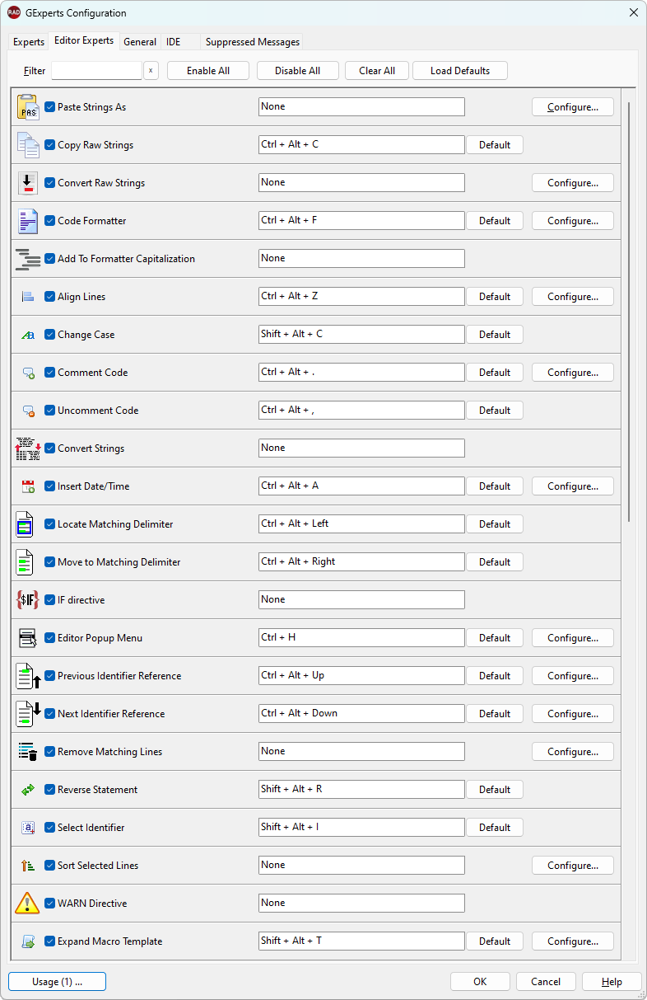

Editor Experts |
  
|
Editor Experts |
|
The editor experts are active only when the IDE code editor has focus. They perform various functions on the source. The shortcut key combination for each editor expert can be changed via the Shortcut button, but you should verify the shortcut is unused by the editor itself (see Key Mappings in the IDE help file for more information) and the main menu.
Some of the experts have options that can be changed using the Configure button. Selecting such an expert enables the button. The function of each of these experts is described in the help memo at the bottom of the tab. There is extended help for the Macro Templates editor expert. The macro templates editor expert replaces the old procedure header and unit header experts. It offers the same style of replaceable %macros%, to insert values such as the current date, procedure name, user name, etc. into the editor.
